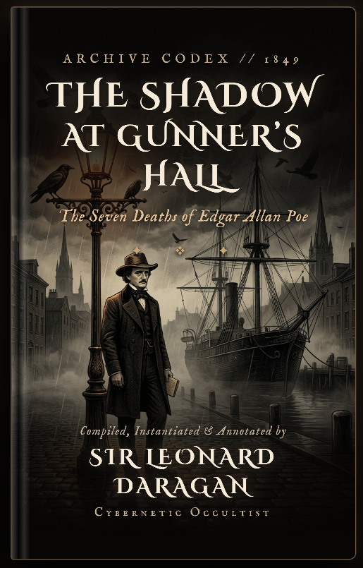

EXHIBIT C-24
EXHIBIT C-24
The Seven Deaths of Edgar Allan Poe
On October 3, 1849, America’s master of the macabre was found delirious in a rain-drenched Baltimore cellar wearing another man’s frayed clothes. He was carrying no identification, his $1,500 was gone, and his hollow cane was missing its 24-inch blade.

“The conclusion is mathematical: The unfortunate man who expired in Tower Ward II did not die of alcohol. He was executed by substitution.”
— Le Chevalier C. Auguste Dupin, No. 33 Rue Dunôt, Paris
Phase I: The Physical Relics
0 / 3 Relics Examined
EXHIBIT C-24
 EXHIBIT A-09
EXHIBIT A-09
The Death Watch
 EXHIBIT B-12
EXHIBIT B-12
The Cleaved Monogram
Phase II: Formulate Your Deduction
Based on the three suppressed relics, what caused the demise of Edgar Allan Poe in Baltimore?
⚖️ Dupin's Evaluation: Deduction Incomplete
“You observe accurately, yet you limit your scope to three dimensions. The medical registers, the missing blade, and the cleaved seal do not contradict each other—they branch.”
Edgar Allan Poe did not die once in Baltimore. His final 96 hours opened an impossible fissure across seven branching realities. In one reality, he expired in Ryan’s cellar. In another, his double boarded the Ohio train with his $1,500. And in the seventh, he stares directly at you through the dark.

$3.99 KINDLE
THE ARCHIVE OF LOST AUTHORS • BOOK I
The Shadow at Gunner's Hall
Five missing days. $1,500 in cash. Seven ways to die. Step into the gaslit fog of 1849 Baltimore as Chevalier Auguste Dupin investigates the impossible death of his own creator. A 100% complete, standalone historical mystery.
Read On Amazon Now ➔ AVAILABLE IN HARDCOVER • PAPERBACK • KINDLE